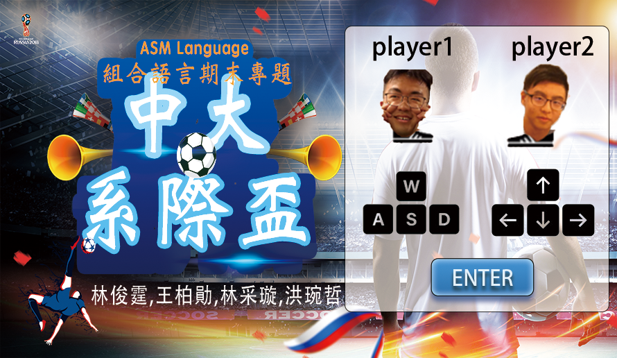
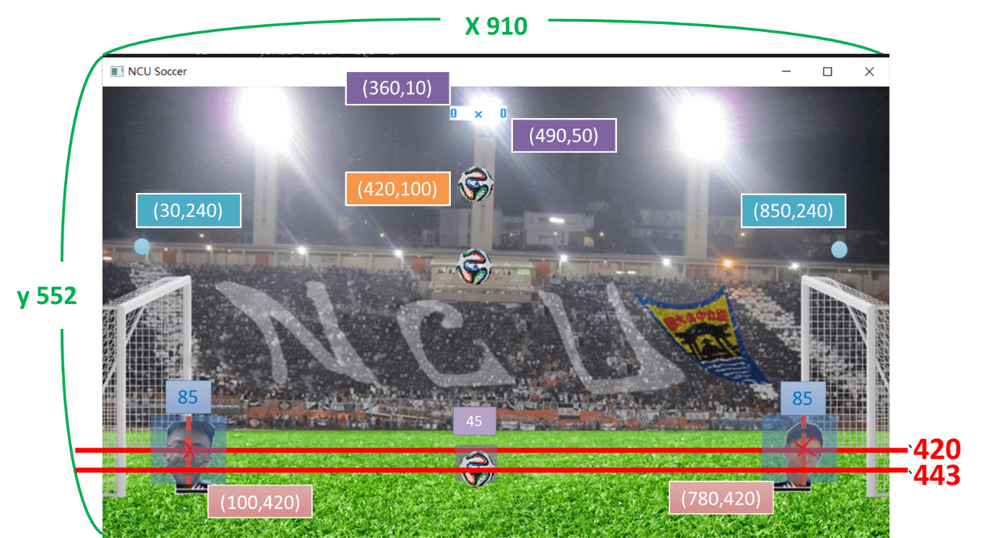

<div id="ajax-page" class="ajax-page-content">
    <div class="ajax-page-wrapper">
        <div class="ajax-page-nav">
            <div class="nav-item ajax-page-prev-next">
                <a class="ajax-page-load" href="portfolio-3.html"><i class="lnr lnr-chevron-left"></i></a>
                <a class="ajax-page-load" href="portfolio-2.html"><i class="lnr lnr-chevron-right"></i></a>
            </div>
            <div class="nav-item ajax-page-close-button">
                <a id="ajax-page-close-button" href="#"><i class="lnr lnr-cross"></i></a>
            </div>
        </div>

        <div class="ajax-page-title">
            <h1>NCU soccer game(Assembly)</h1>
        </div>

        <div class="row">
            <div class="col-sm-8 col-md-8 portfolio-block">
                <div class="owl-carousel portfolio-page-carousel">
                    <div class="item">
                        
                    </div>
                    <div class="item">
                        
                    </div>
                    <div class="item">
                        
                    </div>
                    <div class="item">
                        
                    </div>
                </div>

                <p><i class="fa fa-bell" aria-hidden="true"></i> 此為部分內容，詳細請點隔壁連結網址</p>

                <script type="text/javascript">
                    jQuery(document).ready(function ($) {
                        $('.portfolio-page-carousel').imagesLoaded(function () {
                            $('.portfolio-page-carousel').owlCarousel({
                                smartSpeed: 1200,
                                items: 1,
                                loop: true,
                                dots: true,
                                nav: true,
                                navText: false,
                                margin: 10,
                                autoHeight: true
                            });
                        });
                    });
                </script>
            </div>

            <div class="col-sm-4 col-md-4 portfolio-block">
                <!-- Project Description -->
                <div class="project-description">
                    <div class="block-title">
                        <h3>說明</h3>
                    </div>
                    <ul class="project-general-info">
                        <li>
                            <p><i class="fa fa-user"></i> 林俊霆 王柏勛 林采璇 洪琬哲</p>
                        </li>
                        <li>
                            <p><i class="fa fa-graduation-cap"></i>指導:鄭旭詠 教授</p>
                        </li>
                        <li>
                            <p><i class="fa fa-globe"></i> <a href="https://github.com/JunTingLin/NCU_soccer_game"
                                    target="_blank">NCU soccer game</a></p>
                        </li>
                        <li>
                            <p><i class="fa fa-calendar"></i> January 1, 2022</p>
                        </li>
                    </ul>

                    <p class="text-justify">透過MASM32的函式庫搭配上課所學的ASM語法，打造出雙方可以互玩的足球射門遊戲，
                        一位玩家透過WASD控制方向，一位玩家透過上下左右控制移動，進對方球門得分，
                        獲勝後出現該玩家的大頭貼，按ENTER可再繼續遊戲。</p>
                    <!-- /Project Description -->

                    <!-- Technology -->
                    <div class="tags-block">
                        <div class="block-title">
                            <h3>技術</h3>
                        </div>
                        <ul class="tags">
                            <li><a>Assembly</a></li>
                            <li><a>C++</a></li>
                            <li><a>Masm32</a></li>
                            <li><a>MSDN Library</a></li>
                        </ul>
                    </div>
                    <!-- /Technology -->

                </div>
                <!-- Project Description -->
            </div>
        </div>
    </div>
</div>